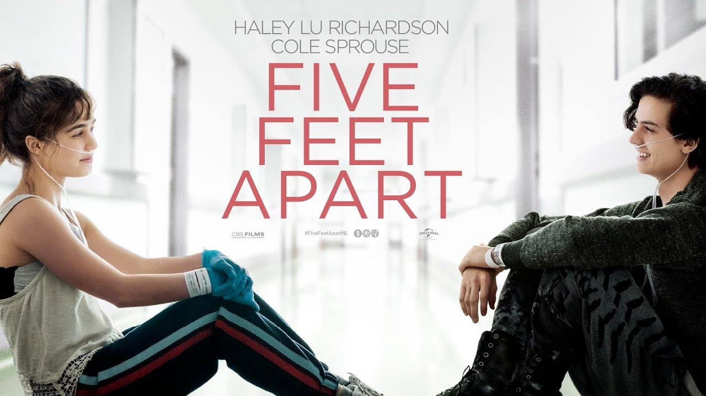
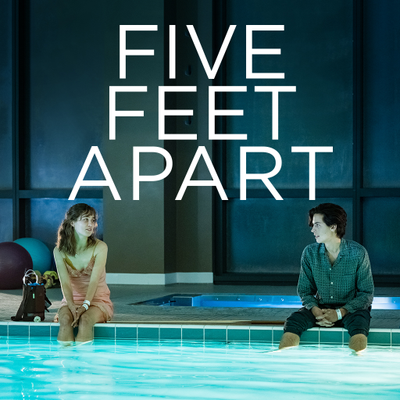

This second movie of mine is "Five Feet Apart", directed by Justin Baldoni. This movie is about two individuals that battle the cystic fibrosis disease. Both of their lives change when they meet each other, however, they always had to stay at least 6 feet away from each other. They become emotionally closer and ended up being staying always 5 feet apart, hence the name of the movie. This movie has a sad ending.
 